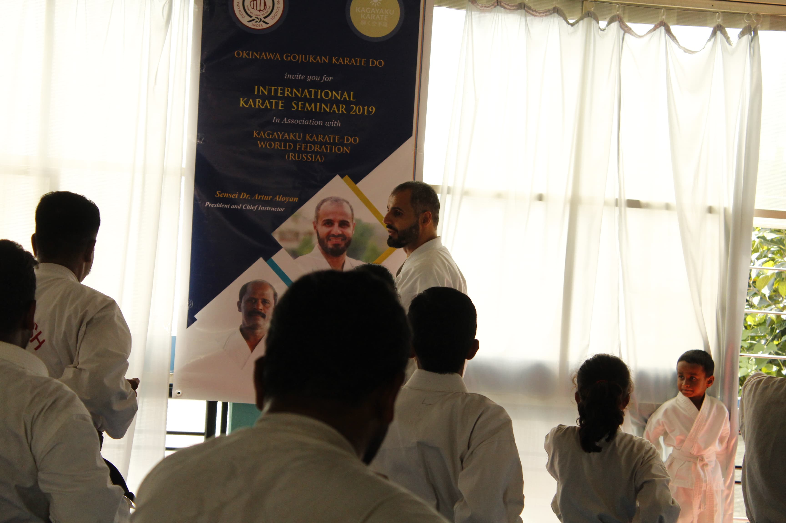
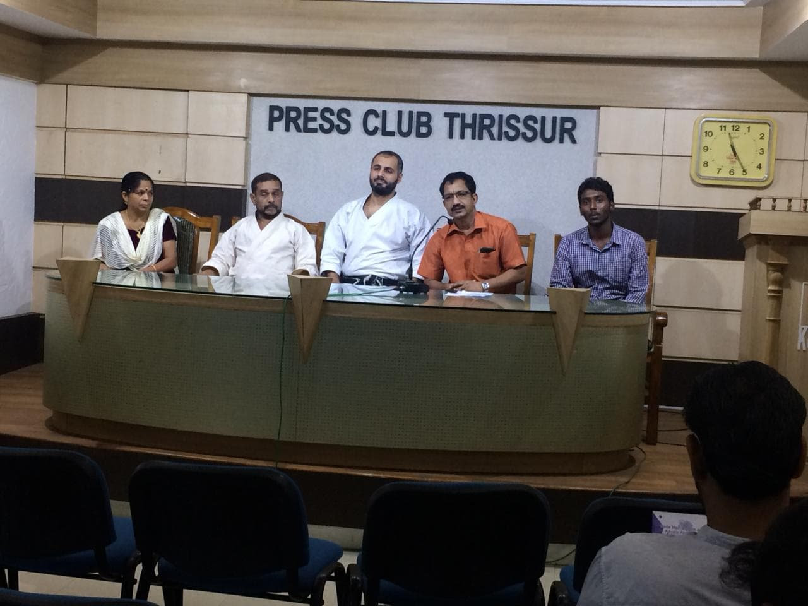

Kagayaku Karate chief instructor Sensei Dr Artur awarded the state award «Honored Martial Arts Mentor»
Sensei Dr. Arthur Aloyan — chief instructor of Kagayaku Karate, was awarded the state award «Honored Martial Arts mentor». For over 20 years, Sensei Dr Artur has contributed to the development of martial arts and Karate in particular...
Read more ↪
The International Karate Seminar 2019

Kagayaku karate held «The International Karate Seminar 2019» in Asia. Kagayaku Karate held an international all-style karate workshop. The following sections of karate were affected: ...
Read more ↪
Training course for security Officers in Asia
The security service must be able to respond to any threats. For this purpose several required components are required: ...
Read more ↪
7 days Self-defense seminar for students in Asia. May 2019
The seminar was held for university students. The guys had absolutely no experience in the martial arts. The objectives of the seminar were the following sections: ...
Read more ↪
Sri Sri Ravi Shankar held a meeting with Dr.Artur Aloyan, a president of Kagayaku Karate World Federation. March 2019
Thanks to the educational activities of karate all over the world and the joint development of Indian karate, there was a very high-level meeting between Sri Sri Ravi Shankar and Doctor Artur Aloyan — a president of Kagayaku Karate World Federation...
Read more ↪
First official presentation of Kagayaku Karate in Asia 2018

Presented personally by Chief instructor of Kagayaku Karate World Federation (KKWF) Dr.Artur Aloyan (september — december 2018). Multiple seminars and master classes perfomed by Kagayaku Karate World Federation were held in many Asian countries...
Read more ↪
First official presentation of Kagayaku Karate in USA 2018
First Official Kagayaku Karate Seminar in Miami, FL, United States of America was held by Dr. Artur Aloyan in May 2018...
Read more ↪
Karate World Cup in Turkey in April 2018

Kagayaku Karate team succesfully perfomed at Shotokan Karate World Cup 2018
Read more ↪